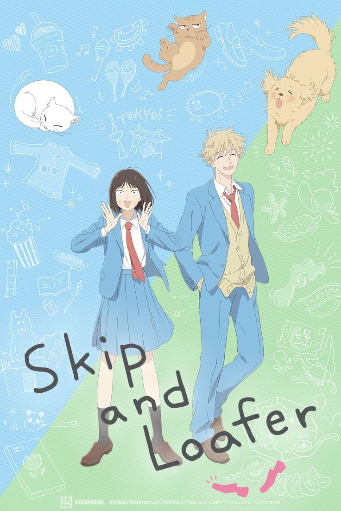
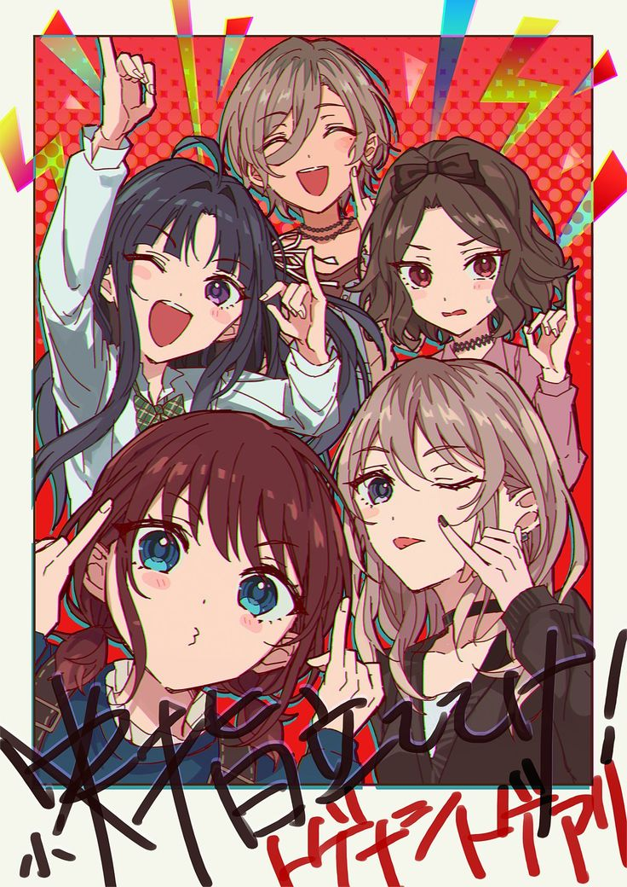
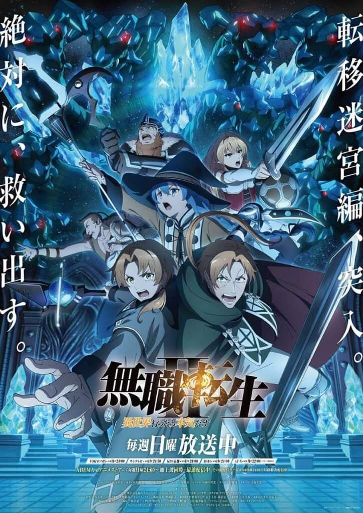
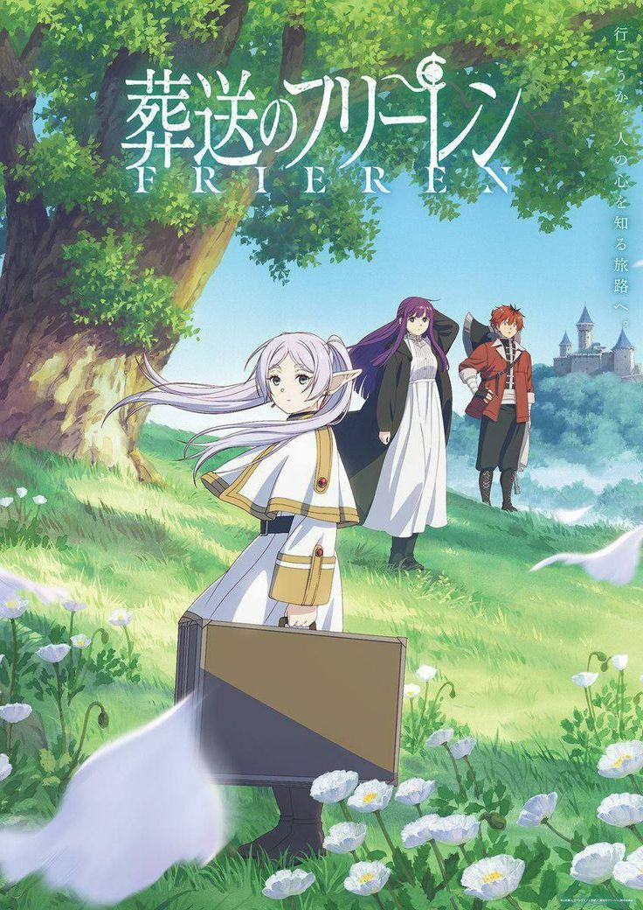

My name is Miguel, and welcome to my blog today i want to share my best anime list on this blog, because i really like anime i want
you too enjoy anime as well ^^/.
This is My list for the best anime for me
Skip to Loafer

The reason I chose this anime is because skip to loafer is one of kind romance drama with a slice of life that actually good
, i mean we need like once every year to get this type of anime and skip to loafer is a slap. I never been feel so calm watching a drama romance anime,
and the opening slap so hard goddamit.
Girls Band Cry

For you who liked music i very recommend this anime, Girls Band Cry is at a special place at my heart
the drama, the song, the mc character development are top notch, Yeah-yeah we got bocchi the rock but bocchi
is more like a relatable introvert chara that also like but GBC still got the drama that hit diffrent, the song
slap too btw.
Vinland Saga
Vinland saga one of the heart touching anime, in a world where there is only fight and war where our mc
try to avange his father death. This anime is not just about the fight, the war, the polotic, is about life
how people in the past suffer from being lost and not knowing what is the purpose of life, and our boy thorfinn really felt that
and deserve in my list.
Mushoku Tensei: Jobless Reincarnation

Ah yes finally a good isekai, mushoku tensei isn't just a isekai it is a second change for our mc to make his life meaningfull,
every other isekai really just put someone into a new world with a overpower magic ability that make him have an easy life, but with
mushoku is not about the magic, the renkarnation, its about second chance that the mc needed
Frieren: Beyond Journey's End

And at the top of my list we got Friren, The only fantasy anime that hit my heart like a truck
even tho the anime is very slow pase but that the good part about it for me. I like every story that friren told
every advanture that she been through with his friend and the advanture still continue in her heart forever.
If you like Fantasy i highly suggest this anime, the politic,
the plot, the story pacing is just godly to me, and the opening slap harder than my mother.
If you seek drama with a taste of Slice Of life and a family bond
this is just for you !. Even tho the first season is kinda slow And
boring for others but it will worth it at the end.
This is the all father of isekai and this show slap hard, even tho the second season and the third season
kinda felloff, But still i recommend this show to awaken somethings in you.
.jpeg)